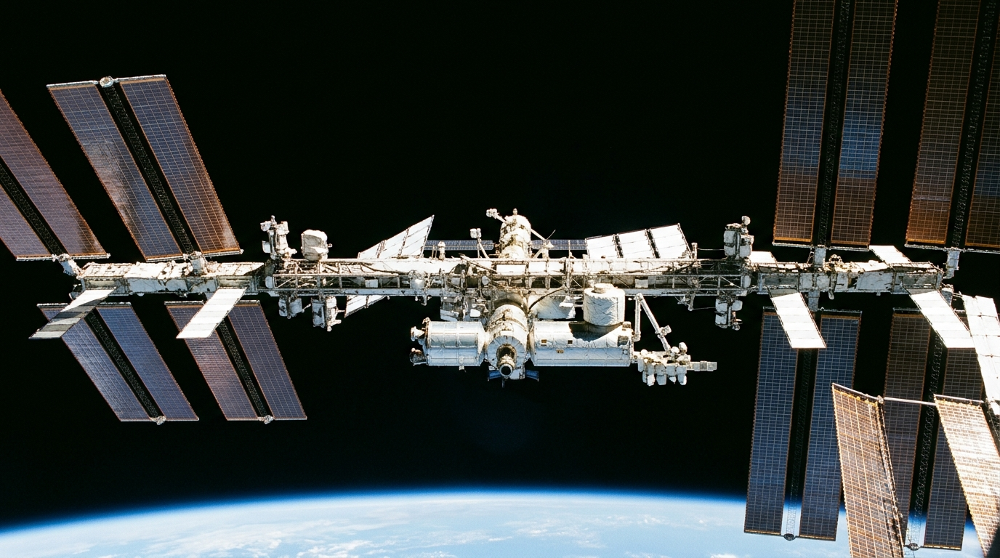

Space Station

International Space Station
NASA / ESA / JAXA / ROSCOSMOS
The largest crewed spacecraft ever constructed, spanning 109 metres — the size of an American football field. Continuously inhabited since November 2000, it completes 15.5 orbits of Earth every 24 hours at 27,600 km/h.
▸ Track Live